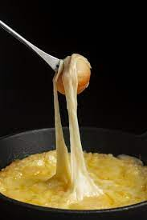

Receita de cuscuz

Ingredientes
- 1 pacote de cuscuz de milho
- 1kg carne seca
- 2 canecas de água
- Uma cebola picada
- Frigideira
- 500g de queijo

Modo de preparo
- Molhe a massa de cuscuz aos poucos com água
- Deixe a massa descansando e corte a carne seca e o quejo
- Coloque a carne seca dentro da panela de pressão até estar no ponto de desfiar
- Coloque a massa de cuscuz já molhada dentro da cuscuzeira e leve ao forno
- Retire a carne seca da pressão, desfie e reserve
- Pique a cebola e leve para dourar dentro da frigideira no oleo
- Assim que a cebola dourar, coloque a carne seca
- Retire o cuscuz do fogo, junto da carne seca e sirva